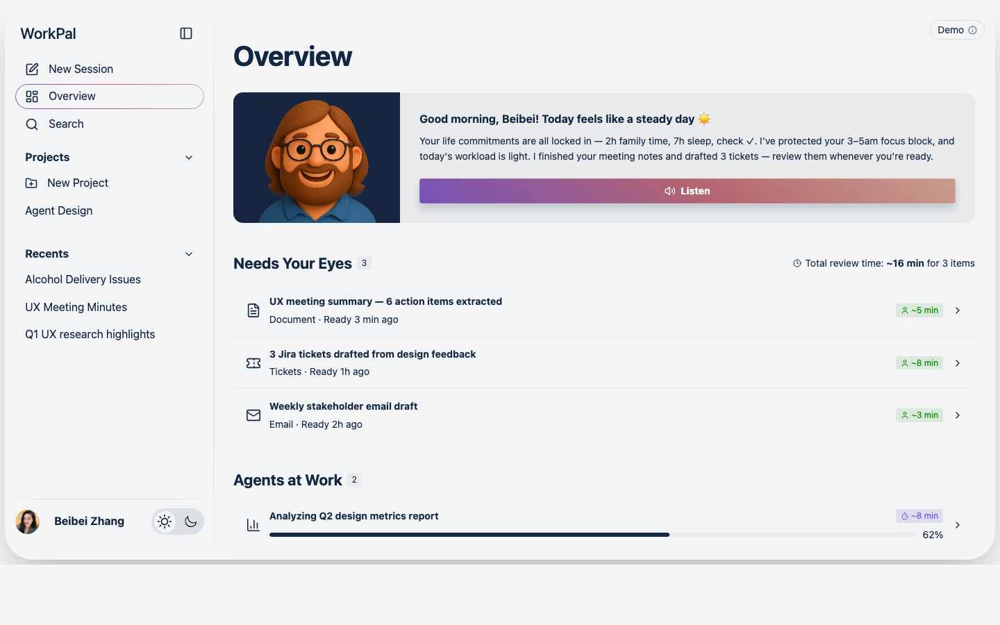

Role
End-to-end product design
WorkPal combines OpenAI's natural-language fluency with Claude Cowork's task execution into a single project-centered workspace. I designed it end-to-end — establishing the visual and interaction language for a product category that didn't have one yet.
This page is the case study: what WorkPal does, the design problems behind it, and what this work proves about how I operate at Staff / Principal level.

Most "AI workspaces" today are either chat windows with a memory layer, or task managers with an LLM bolted on. WorkPal is designed from the assumption that the agent is a first-class collaborator — not a feature.
WorkPal combines OpenAI's natural-language capabilities with Claude Cowork's task management — so conversation and execution come from the same surface. No more switching between your favorite chat tool and your favorite task tool to get a single piece of work done.
Tasks and conversations live inside project folders that share memory. The project remembers what you've already discussed, decided, and done — so the agent doesn't either.
The AI determines whether your message is a chat or a task. You don't pick the right mode — you just talk. The system disambiguates intent so the user never has to.
A single dashboard shows what every agent is doing right now, plus the surface where they report back. Agentic systems are opaque by default — Overview makes them legible.
Onboarding and Overview surface the user's personal context — energy, commitments, life-side priorities — so the agent's plan balances work and life, not just throughput.
WorkPal is the work, not a thought piece. It's the most concentrated demonstration of how I show up: hands-on craft, system thinking, 0→1 instinct, and the player-coach mode that holds the bar at every layer.
I'm focused on Staff / Principal / Sr. Manager roles in agentic AI, consumer-scale design, and creative tools — currently looking at Adobe, PayPal/Venmo, and Stripe Agentic Commerce. Happy to walk through any part of this case study live.